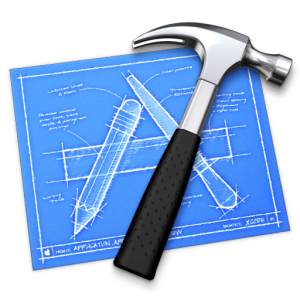
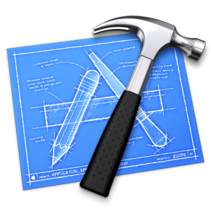
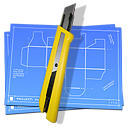
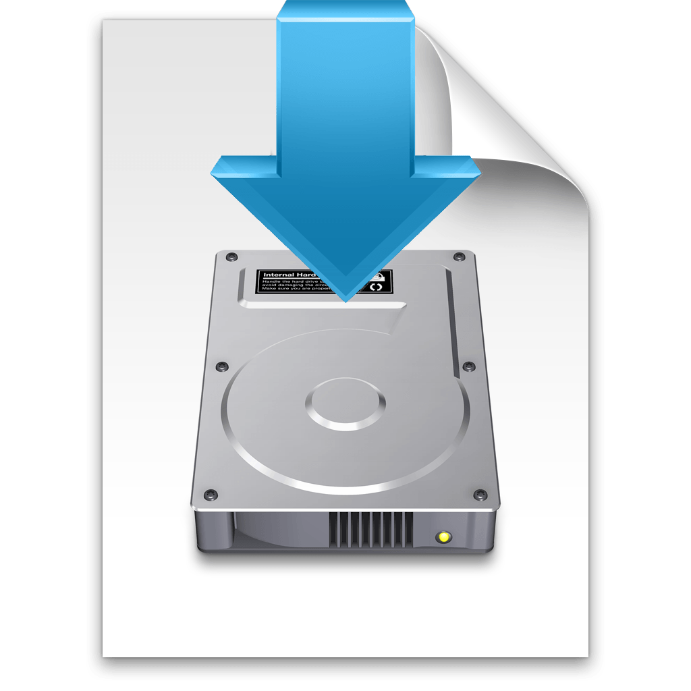
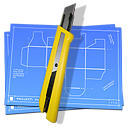
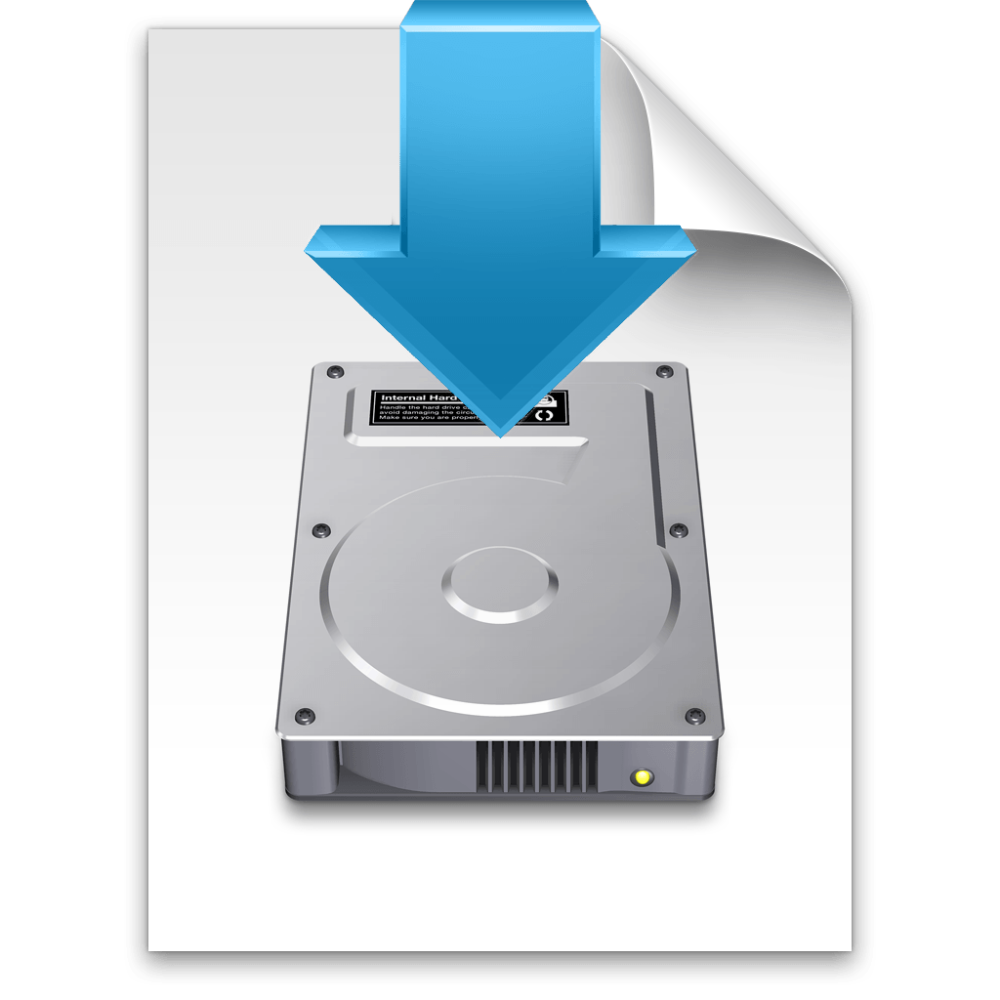
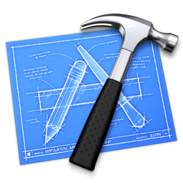
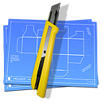
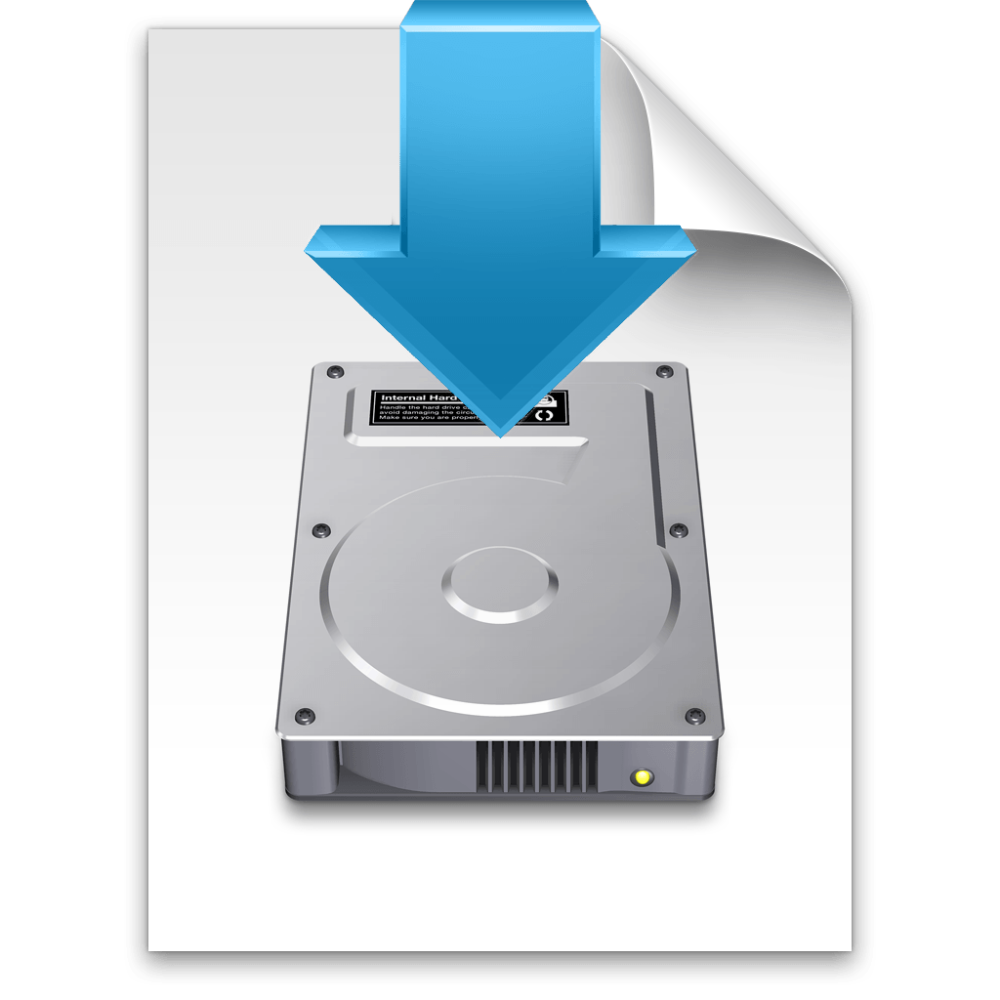

 






The first Apple workstation room I helped to develop was at Winchester School of Art, using carbon copy cloner software.
On later projects such as Digital Humanities Music Cluster and Dalian Polytechnic University I used Deployed Studio to create and deploy a monolithic image to Apple iMac workstations.
Since Apple have moved from HFS to APFS deploy studio is no longer used and I use MDM solutions such as JAMF and Munki to maintain the Apple infrastructure.
uConnect is an application I help to develop that connect students
and staff to a number of University resources from a Macintosh
computer.
uConnect website
My GitHub - Here you can find my dotfiles and various scripts I’ve written.